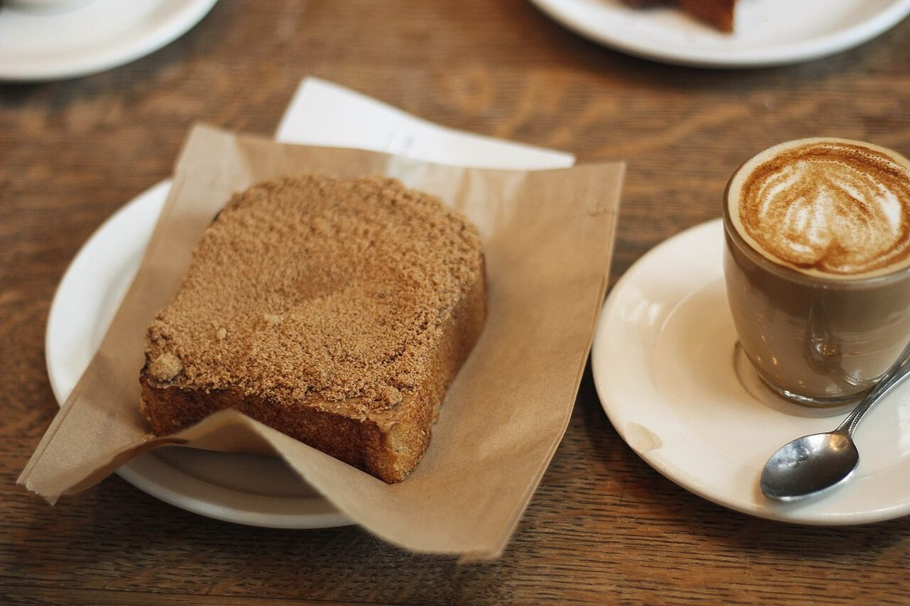
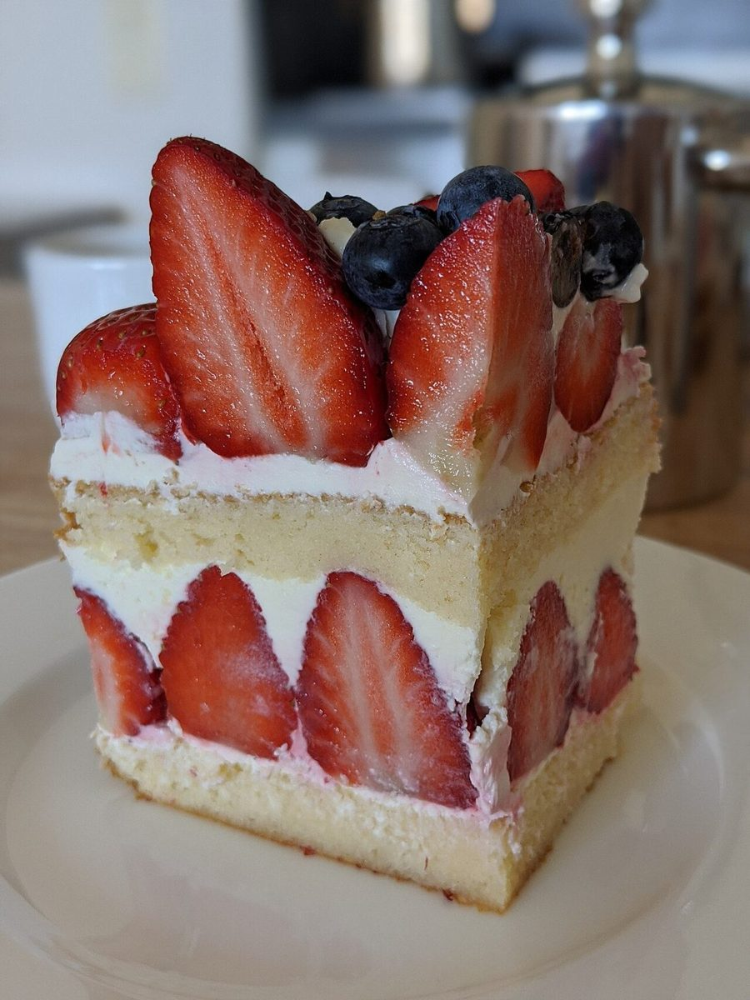
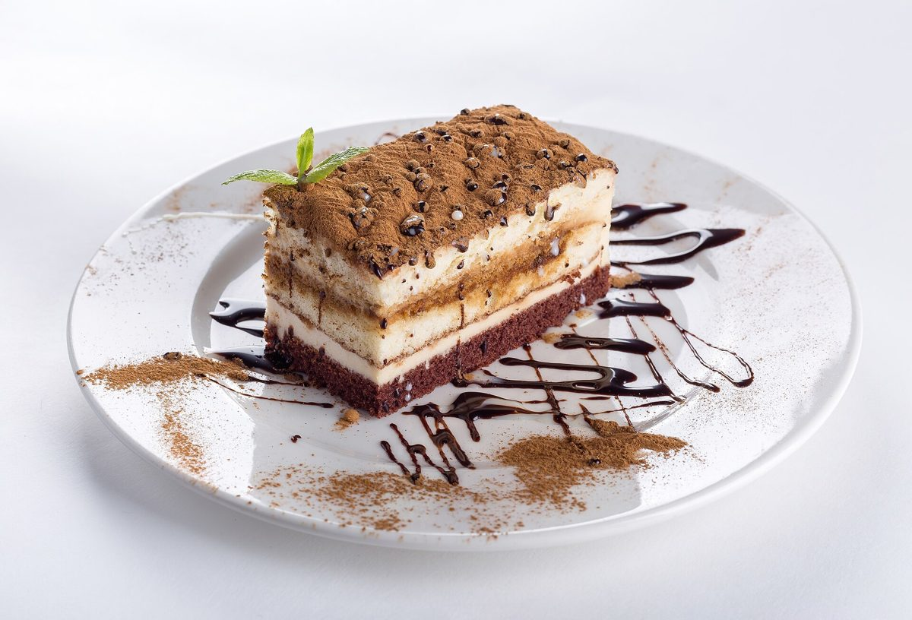

1 / 4かかたち



丸い、四角い、貝の形。並べて眺めると、焼き菓子の輪郭はこんなに違います。
焼き菓子・洋菓子の店 / 石川県能美市
石川県能美市のお菓子屋「kashizuki」のご案内ページです。営業時間やお品書きなど、詳しいことは準備中。まずはInstagramをのぞいてみてください。

制作側の連想
屋号の由来は分かりません。制作側は「かしづき」という響きを、か・し・づ・きの四つの音に分けて眺めることを思いつきました。「菓子」「傅き」「月」といった言葉も連想できますが、どれも制作側の勝手な連想で、お店の理念・由来とは無関係です。人名や由来だと断定するものでもありません。
そこで、このページでは四つの音を「札」に見立て、フリー素材の洋菓子・焼き菓子の写真を3枚ずつ、見た目の言葉(かたち・しま・いろづき・きらり)で並べました。写真は国外・撮影地不明のイメージで、お店のものではありません。
四音札

丸い、四角い、貝の形。並べて眺めると、焼き菓子の輪郭はこんなに違います。


切り口に現れるスポンジとクリームの重なり。層の数を数えたくなる写真です。


ひとつひとつ違う色。並べるだけで、小さな色見本のようになります。


つや、砂糖粒、金色の飾り。光の当たり方で表情が変わる表面を集めました。
ご案内
| 所在地 | 〒929-0123 石川県能美市中町未40-1 |
|---|---|
| 電話 | なし |
| 営業時間 | 準備中 |
| 定休日 | 準備中 |
| ご予約 | 準備中 |
| 駐車場 | 準備中 |
| SNS | Instagram @okashiya_kashizuki |